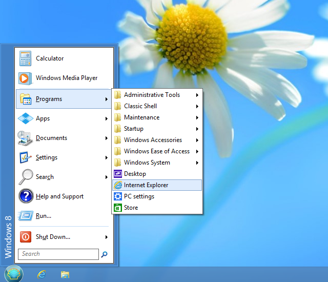
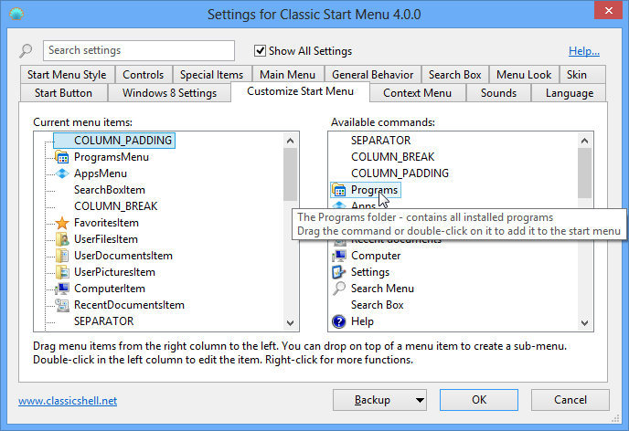
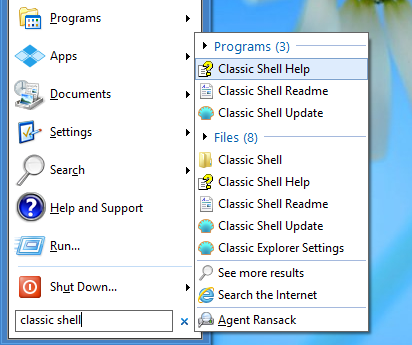

Open-Shell Menu
Open-Shell Menu
Open-Shell Menu
es un menú inicio flexible que puede imitar el comportamiento del menú de Windows
2000, XP y Windows 7. Tiene varias características avanzadas:
- Elegir entre los estilos «Clásico» y «Windows 7»
- Arrastrar y colocar para permitirle organizar sus aplicaciones
- Opciones para mostrar Favoritos, expandir el Panel de Control, etc.
- Muestra documentos usados recientemente. La cantidad de documentos a mostrar puede personalizarse
- Traducido a 35 idiomas, lo que incluye compatibilidad de derecha a izquierda para árabe y hebreo
- No deshabilita el menú inicio original de Windows. Puede acceder a éste con Mayús+Hacer clic en el botón inicio
- Hacer clic con el botón secundario en un elemento del menú para eliminarlo, cambiarle el nombre, ordenarlo o realizar otras tareas
- El cuadro de búsqueda le ayuda a encontrar sus programas y archivos sin comprometer sus métodos abreviados de teclado
- Admite listas de accesos directos para obtener acceso fácil a documentos recientes y tareas comunes
- Disponible para sistemas operativos de 32 y 64 bits
- Admite máscaras, incluyendo máscaras adicionales de terceros. ¡Cree la suya!
- Completamente personalizable, tanto en la apariencia como en el funcionamiento
- Compatibilidad con Microsoft Active Accessibility
- Convierte el botón «Todos los programas» del menú de Windows en un menú en cascada
- Implementa un botón inicio personalizable
- Puede mostrar, buscar e iniciar aplicaciones de la Tienda Windows (Windows 8)
- Y por último mas no menos – ¡es GRATIS!
Estilos
El menú inicio ofrece para elegir 3 estilos.
1) Estilo clásico de columna única

Este estilo es similar al del menú de Windows 2000. Tiene una sola columna en el menú principal con texto vertical en el lateral. Puede personalizar el orden de los elementos, iconos y el texto.
Programas, listas de accesos directos y los resultados de búsqueda se muestran como submenús en cascada.
2) Estilo clásico de dos columnas

Este estilo es similar al menú de Windows XP. Hay dos columnas en las que puede ordenar los elementos de menú. Puede personalizar el orden, los iconos y el texto.
Programas, listas de accesos directos y los resultados de búsqueda se muestran como submenús en cascada.
3) Estilo Windows 7

Este estilo es similar al menú de Windows Vista y Windows 7. Los elementos de la primera columna están predefinidos para elementos anclados y documentos y programas recientes, la lista de todos los programas y el cuadro de búsqueda. Los elementos de la segunda columna son completamente personalizables.
Las listas de accesos directos y los resultados de búsqueda se muestran dentro del menú principal. Los programas pueden estar dentro del menú principal o abrirse como un submenú en cascada.
Este estilo ofrece menos opciones de personalización que los estilos clásicos, pero en apariencia y funcionalidad es más familiar para la gente acostumbrada a Windows 7.
Operación
Si ha usado el menú inicio de versiones de Windows anteriores, se sentirá como en casa:
Para abrir el menú inicio, presione la tecla Windows o haga clic en el botón de la esquina de la pantalla.
Para tener acceso al menú inicio propio del sistema operativo, mantenga presionada la tecla Mayús mientras hace clic en el botón.
Haga clic en un elemento para ejecutarlo.
Arrastre un programa para cambiar el orden de los programas en el menú o moverlo a otra carpeta.
Haga clic con el botón secundario en un elemento para cambiarle el nombre, eliminarlo, explorarlo, ordenar el menú o realizar otras tareas.
Haga clic con el botón secundario en el botón para editar la configuración del menú inicio, ver este archivo de ayuda o detener el menú inicio.
Configuración
Para obtener acceso a la configuración, haga clic con el botón secundario en el botón inicio:
Puede elegir entre ver sólo las configuraciones básicas o todas las configuraciones disponibles. Sitúe el mouse encima de cada configuración para ver una descripción de para qué sirve. Para buscar una configuración por su nombre, escriba en el cuadro de búsqueda.
Toda configuración tiene un valor predeterminado. El valor predeterminado puede ser constante,
o depender de la configuración actual del sistema. Una vez que edite una configuración, se volverá "modificada" y se mostrará en negrita. Para revertir al valor predeterminado, haga clic con el botón secundario en la configuración.
Puede guardar las configuraciones en un archivo XML y ulteriormente volver a cargarlas.
Para tener acceso a estas funciones, pulse el botón Copia de Seguridad. Desde allí también puede restablecer todas las configuraciones a sus valores predeterminados.
La mayoría de las configuraciones se cambiarán inmediatamente a medida que las edita. Por ejemplo,
puede editar el menú inicio y, mientras sigue abierto el diálogo Configuración,
tener acceso al menú inicio para ver los cambios. Un número reducido de configuraciones requerirán que antes de poder ver el cambio salga del menú inicio.
Nota: Todas las ventanas de Configuración son redimensionables. Redimensiónelas y colóquelas donde desee que estén. Recordarán la posición nueva.
Para personalizar los elementos del menú, haga clic en la pestaña Personalizar menú Inicio. En función del estilo verá una IU distinta.
Para los estilos clásicos, puede personalizar ambas columnas del menú inicio y crear submenús. La columna de la izquierda muestra los elementos actualmente en el menú,
y la columna de la derecha los elementos de menú disponibles. Para agregar elementos al menú, arrástrelos de la derecha a la izquierda.

Para el estilo Windows 7 sólo puede editar los elementos de la segunda columna, y no hay submenús.

Para editar las propiedades de un elemento, haga doble clic en su icono:

Aquí puede seleccionar un comando para el elemento, su texto, icono y otros atributos. Para obtener el texto e icono predeterminados del comando elegido, pulse el botón Restaurar predeterminados.
El comando puede:
- ser alguno de los comandos predefinidos - desde el desplegable
- cadena personalizada del ejecutable
- pueden ser el nombre de un programa y sus argumentos, o incluso una URL
(como http://www.google.com). Se admiten variables de entorno como %SystemRoot%
- dejarse vacío - si se usa el atributo vínculo, actuará como un comando
El vínculo puede ser una ruta a un archivo o carpeta. Si es un archivo, se ejecutará dicho archivo. Si es una carpeta, dicha carpeta se abrirá como un submenú. Algunos elementos de menú (como Programas y Favoritos) tienen un atributo vínculo implícito, con lo que para aquellos el cuadro Vínculo se deshabilitará.
El icono puede:
- dejarse en blanco - si el atributo vínculo señala a un archivo o carpeta, se usará el icono de dicho archivo o carpeta
- ser archivo de recursos,identificador de icono - por ejemplo %windir%\notepad.exe,2. No deje espacio entre el nombre de archivo y la coma. Asegúrese de que usa el identificador del recurso del icono y no el índice del icono. Para los mejores resultados, use el botón [...] de al lado del cuadro de icono
- ser ,identificador de icono - igual que lo anterior, pero el archivo de recursos es StartMenuDLL.dll en sí. Esto es útil al hacer referencia a iconos propios del menú inicio
- ser archivo de icono - por ejemplo C:\Program Files\Mozilla Thunderbird\Email.ico
- ser none - esto usará un icono vacío
Si los atributos etiqueta o consejo empiezan con $ (signo de dólares), el sistema lo tratará como el nombre de una cadena en el archivo StartMenuL10N.ini. El texto real dependerá de la configuración de idioma actual. Resulta útil al crear un menú que pueda usarse en varios idiomas.
Si marca "Insertar subelementos como botones", en lugar de mostrar el elemento de menú en sí, el menú inicio mostrará los elementos como una fila de botones. De forma predeterminada, los botones están centrados. Puede alinearlos a la
izquierda agregando un separador como último elemento, o alinearlos a la derecha
agregando un separador como primer elemento. Un uso posible es reemplazar
el elemento de menú Apagar por
botones separados para apagar, reiniciar, cerrar sesión, etc.
Configuración administrativa
Las configuraciones son
por usuario y se almacenan en el registro. De manera predeterminada, todos los usuarios pueden editar
toda su configuración. Un administrador puede bloquear configuraciones específicas, de
modo que ningún usuario las pueda editar:
En este ejemplo, la configuración "Habilitar el menú del botón secundario" está bloqueada para que siempre
esté desmarcada y ningún usuario la pueda cambiar. Esto se logra
agregando la configuración a la clave del registro HKEY_LOCAL_MACHINE\SOFTWARE\OpenShell\Menu. Cree un valor DWORD llamado "EnableContextMenu" y establézcalo en 0.
En algunos casos quizá no desee bloquear el valor para todos los usuarios, sino
simplemente modificar el valor inicial de la configuración. En tal caso, agregue
"_Default" al nombre del valor. Por ejemplo, si desea que el
menú contextual esté deshabilitado de manera predeterminada pero seguir permitiendo que los usuarios lo habiliten
si les place, cree un valor DWORD con nombre "EnableContextMenu_Default"
y establézcalo en 0.
La manera más fácil de saber el nombre de una configuración en el registro y su valor es modificarla, y acto seguido buscarla en HKEY_CURRENT_USER\Software\OpenShell\StartMenu\Settings.
Puede que a veces desee bloquear una configuración en su valor predeterminado, pero
no sabe cuál es el valor predeterminado. De ser así, cree un valor DWORD y establézcalo
en 0xDEFA.
También hay una configuración global "EnableSettings". Establézcala en 0 en el
registro para evitar incluso que los usuarios abran el diálogo Configuración:

El menú inicio también comprueba la mayoría de directivas de grupo configuradas por el administrador. Ejecute gpedit.msc y vaya a Configuración de usuario -> Plantillas administrativas -> Barra de tareas y menú Inicio. Desde allí puede deshabilitar Ejecutar, Apagar, Ayuda y otras características. (No disponible en versiones Home de Windows).
También se admite la edición de configuraciones a través de directivas de grupo. Extraiga el archivo PolicyDefinitions.zip que se encuentra en la carpeta de instalación y lea el documento PolicyDefinitions.rtf para más detalles.
Más acerca de las máscaras
Puede elegir entre las muchas máscaras preinstaladas:

O puede descargar e instalar máscaras adicionales de terceros (desde el sitio web principal o desde otro lugar). Tras descargar una máscara nueva,
debe copiar el archivo .skin al directorio Skins – generalmente C:\Program
Files\Open-Shell\Skins. Después estará disponible en la configuración.
Nota: Algunas máscaras pueden estar diseñadas específicamente para
modo Clásico, Básico o Aero. Por ejemplo, una máscara Aero puede requerir
compatibilidad con Glass y, si se seleccionan los temas Básico o Clásico, todo parecerá sucio. Algunas máscaras Aero también pueden requerir que se seleccione un color de Glass específico.
Puede crear su propia máscara. Necesitará un editor de imágenes
compatible con el canal alfa (como Gimp o Photoshop) y una herramienta para editar
archivos de recursos (como Resource Hacker o Visual Studio). Y por supuesto
algo de talento para el diseño gráfico :). Antes de empezar, lea el Tutorial de enmascaramiento (en inglés).
Búsqueda

El cuadro de búsqueda le permite buscar los contenidos del menú inicio, los
programas en la variable de entorno PATH y los archivos indizados. Puede hacer que el cuadro de búsqueda
aparezca como un elemento de menú normal y entonces dirigirse a éste usando las
teclas de dirección arriba/abajo. Puede elegir que el cuadro de búsqueda esté seleccionado de forma
predeterminada al abrir el menú inicio. O puede elegir activar el
cuadro de búsqueda sólo con la tecla Tabulador, de modo que hasta presionar Tabulador pueda usar
el teclado para navegar como si el cuadro de búsqueda no estuviera.
Los resultados de búsqueda se muestran en el menú principal si usa el estilo Windows 7, o en un submenú para los estilos clásicos.
Haga clic en cada categoría para expandirla y ver más resultados. Para ver todos los resultados en el Explorador, haga clic en el icono del final.
Los estilos clásicos le permiten registrar "proveedores de búsqueda" adicionales, que puede usar para
buscar texto desde el cuadro de búsqueda. Ejecuta el programa de búsqueda
seleccionándolo en el menú, o bien presionando Alt+tecla. En este ejemplo, usa Alt+A para Agent Ransack.

Esto se hace agregando subelementos a SearchBoxItem en la pestaña Personalizar menú Inicio:

Abra cada uno de los subelementos y escríbales un comando para iniciar el programa de búsqueda. Si en el comando usa %1, se reemplazará por los contenidos del cuadro de búsqueda. Si usa %2
se reemplazará por el texto a buscar codificado en estilo de URL. Para completar su entrada de menú escríbale una
etiqueta, consejo e icono. En el texto de la etiqueta
puede usar & para marcar el carácter acelerador (por ejemplo &Agent Ransack).
Aquí van algunos comandos posibles:
Buscar con Agent Ransack: "C:\Program Files\Agent Ransack\AgentRansack.exe" -r -f "%1"
Buscar con Everything: "C:\Program Files\Everything\Everything.exe" -search "%1"
Buscar con Google: http://www.google.com/#q=%2
Buscar con Bing: http://www.bing.com/search?q=%2
Botón Inicio personalizado
Open-Shell puede agregar su propio botón inicio a la barra de tareas. Puede incluso
reemplazar el botón inicio predeterminado en Windows 7. Puede elegir entre
un botón estilo Aero, un botón rectangular clásico o
crear el suyo. Para un botón inicio personalizado necesita una imagen que
contenga los 3 estados del botón - normal, activo y pulsado:

La imagen debe ser un PNG o BMP de 32 bits. De forma predeterminada, el ancho de la
imagen determina el tamaño del botón. Puede reemplazarlo
escribiendo un ancho personalizado.
Para más información acerca de la creación de botones personalizados, lea el Tutorial de botones (en inglés).
Puede encontrar muchas imágenes del botón inicio personalizadas en línea. Aquí van algunos ejemplos:
http://www.classicshell.net/forum/viewforum.php?f=18
http://www.sevenforums.com/themes-styles/34951-custom-start-menu-button-collection.html
http://www.sevenforums.com/customization/78291-big-group-custom-start-orbs.html
http://tutoriales13.deviantart.com/art/Orbs-153450418
Localización
La interfaz de usuario (salvo el cuadro de diálogo Configuración) está traducida a 35
idiomas.
El cuadro de diálogo Configuración está traducido a una cantidad de idiomas más pequeña.
La instalación predeterminada sólo lo contiene en inglés. Pueden descargarse más idiomas
desde la página de traducciones. Asegúrese de descargar el paquete de traducción para la versión de Open-Shell exacta.
Línea de comandos
StartMenu.exe admite 5 parámetros de línea de comandos: -open, -toggle, -togglenew, -exit y -settings.
Los dos primeros hacen lo que sugieren sus nombres en inglés. Uno abre el menú inicio clásico, el otro
lo alterna. Puede usar los parámetros para crear un acceso directo en su
barra de Inicio Rápido que abra el menú inicio, o para establecer una tecla rápida en
programas como WinKey.
El tercero "-togglenew" alterna el menú inicio predeterminado de Windows (o pantalla inicio). Resulta útil
si desea crear un acceso directo o tecla rápida para abrir el menú predeterminado y usar la tecla
Win para el menú clásico.
Use "-exit" para salir del menú inicio. Este comando sólo funcionará si el menú inicio no está ocupado actualmente.
Use "-settings" para abrir la configuración del menú inicio. Es útil para crear un acceso directo a fin de editar la configuración.
Accesibilidad
El menú inicio es compatible con lectores de pantalla como JAWS
o el Narrador de Microsoft. Si la compatibilidad con accesibilidad provoca problemas, puede deshabilitarse desde la pestaña Comportamiento general en Configuración.